MapOutputTrackerWorker: the executor's shuffle lookup cache
component index | Driver-side tracker | Shuffle reader
Before an executor fetches any shuffle bytes, it needs a list of blocks and serving addresses. MapOutputTrackerWorker turns a shuffle ID and partition ranges into that list. It is one JVM object shared by tasks on a YARN executor, not a Python worker, a YARN service, or a thread that copies files.
Flow at a glance
- Shuffle manager: Asks which blocks contain data for reduce partition 2 of shuffle 7.
- Executor tracker: Reuses cached map statuses or asks the driver for them.
- Shuffle reader: Receives nonempty block IDs grouped by serving address.
Watch for: A zero size means the block is empty and can be skipped. A missing map status means the location is unknown and the lookup fails.
Show the animated flow

Input to getMapSizesByExecutorId |
How the worker uses it |
shuffleId |
Key in the executor's mapStatuses cache and argument to the driver's GetMapOutputStatuses RPC on a miss. |
[startMapIndex, endMapIndex) |
Slice of logical input partitions in the status array. Int.MaxValue as the end means all remaining entries. |
[startPartition, endPartition) |
Range of reduce partition IDs to read within each selected map output. A task reading reducer 2 alone passes [2, 3). |
The result is an iterator grouped by BlockManagerId. Each group contains (ShuffleBlockId(shuffleId, status.mapId, reduceId), estimatedBytes, mapIndex) tuples. For example, if entry 3 of shuffle 7 describes attempt 41 on executor A, the tuple for reduce 2 names shuffle_7_41_2 but still carries 3. The name lets the server find attempt 41's files; the separate index lets the scheduler identify the input partition on failure. No byte offsets, streams, or file contents are in this result. See the range conversion and zero-size filter and the reader call site.
Cache miss versus cache hit
Sequence diagram · Open full sizeText equivalent
sequenceDiagram
participant R as SortShuffleManager on reducer
participant W as Executor tracker worker
participant D as Driver tracker endpoint
R->>W: getMapSizesByExecutorId with map and reduce ranges
alt Status array absent
W->>W: Lock by shuffle ID and check cache again
W->>D: GetMapOutputStatuses(shuffleId)
D-->>W: Status snapshot or broadcast reference
W->>W: Deserialize and cache full map status array
else Status array present
Note over W: No driver RPC for this lookup
end
W-->>R: Nonempty blocks grouped by serving addressThe executor's SparkEnv constructs the worker and resolves a reference to the driver's endpoint; it does not register a second master endpoint. On the ordinary pull path the lookup asks for map statuses only. The cache-miss branch uses a per-shuffle KeyLock and rechecks the cache inside the lock: concurrent successful misses for the same shuffle need only one fetch. The wire decoder either decompresses the inline array or resolves the broadcast and decodes its contents. This is still a metadata transfer. Tasks on another executor have their own cache.
For each requested map slot, the worker validates the status, then tests the estimated size for each requested reducer. Zero size means a known empty block and is skipped; a null slot is an unknown map location and fails the lookup. It does not synthesize an empty partition. SortShuffleManager hands the grouped result to BlockStoreShuffleReader, whose fetcher chooses local disk, another executor, or an optional external shuffle service.
Invalidation, failure, and lifetime
The driver stamps the current epoch on each task in a task set. Before running it, the executor calls updateEpoch(task.epoch). A higher epoch clears the worker's caches across shuffles; an equal or older epoch leaves them alone. There is no periodic poll and no driver push of replacement locations. A RemoveShuffle message evicts just that shuffle. At executor shutdown SparkEnv calls stop; the worker inherits the no-op base implementation. Its state dies with the executor rather than stopping the driver's endpoint.
Diagnostic: Don't have map outputs for shuffle ... followed by Got the map output locations is a normal cold lookup. A null status throws MetadataFetchFailedException; the conversion handler clears cached statuses and rethrows. The resulting fetch-failed reason has no block-manager address and uses -1 for both map identifiers. The reported partition on this path is the first requested reduce ID, not the missing map index. Look for lost map outputs on the driver. In contrast, Error communicating with MapOutputTracker comes from the RPC ask; start with driver endpoint reachability rather than a producer's .data file.